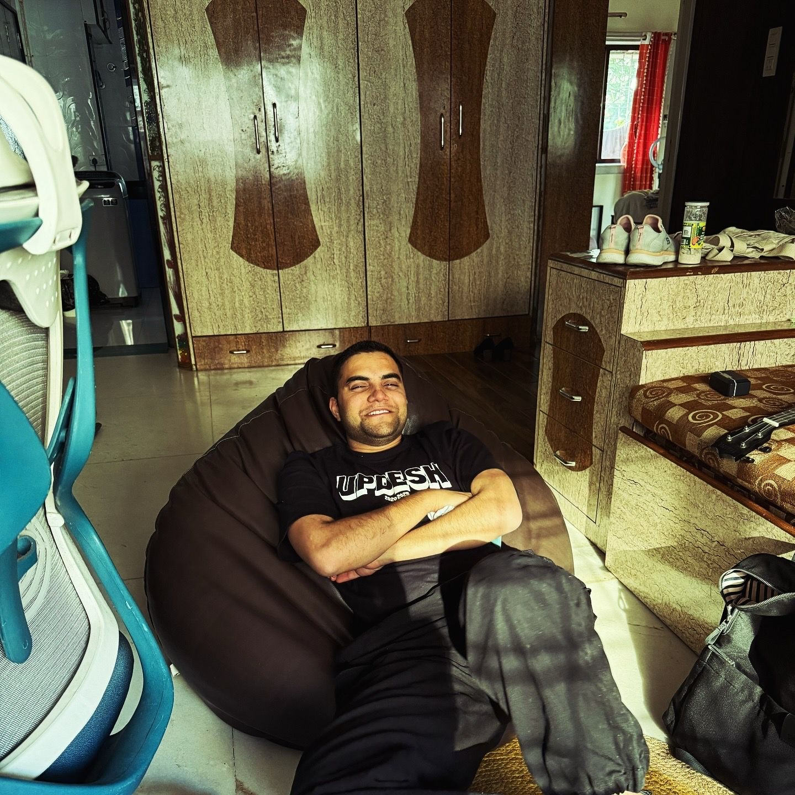

Have you ever felt like?
"A personal space for experiences, reflections, and growth."
Featured Thoughts
Selected pieces that define the journey.


Daily Snippets
Quick thoughts, morning realizations, and daily sparks.
Weekly Deep Dives
Long-form essays on life, tech, and productivity.

About Naman
Writer, strategist, and observer. Through this blog, I document the messy process of growth and the structured pursuit of a meaningful life.
Voices from the Community
Naman's weekly notes have become a non-negotiable part of my Sunday morning ritual. Truly thought-provoking stuff.
Arjun Mehta
Creative Director
The perspective on AI integration is the most balanced and human-centric I've encountered so far.
Sarah Jenkins
Strategy Lead
Every blog post feels like a conversation over coffee. Genuine, deep, and remarkably honest.
Vikram Singh
Entrepreneur
Join the Naman Garg Blog Community
Receive a weekly letter on creativity, philosophy, and the evolving world of AI. No spam, ever.